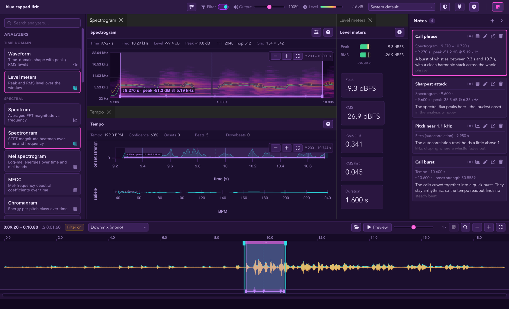
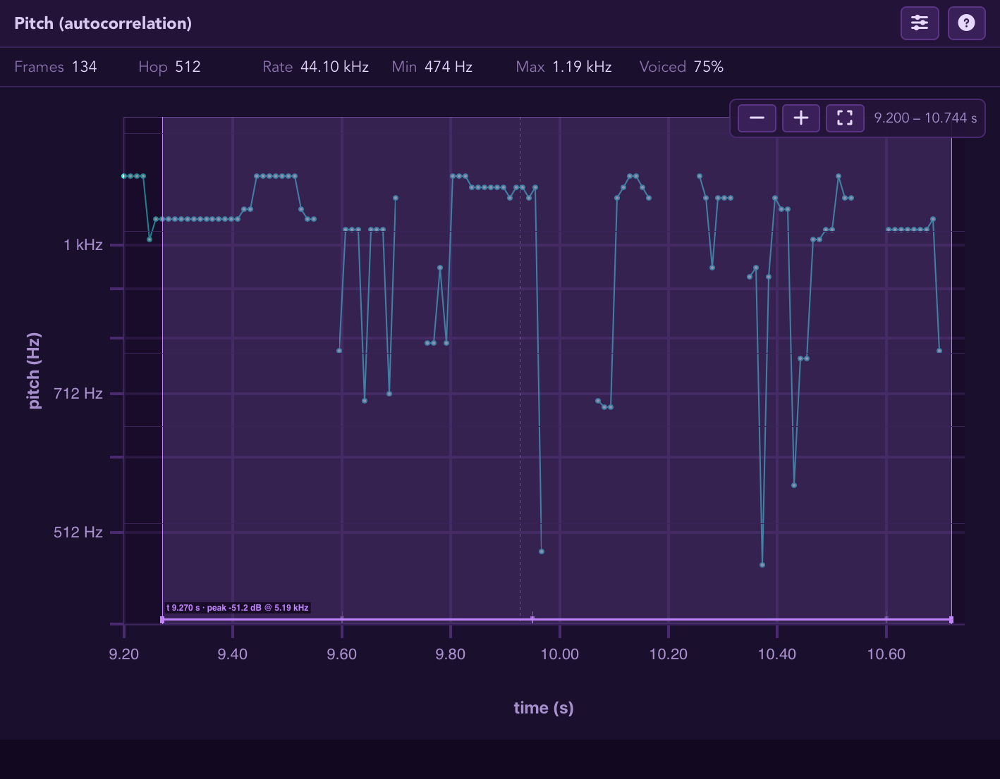
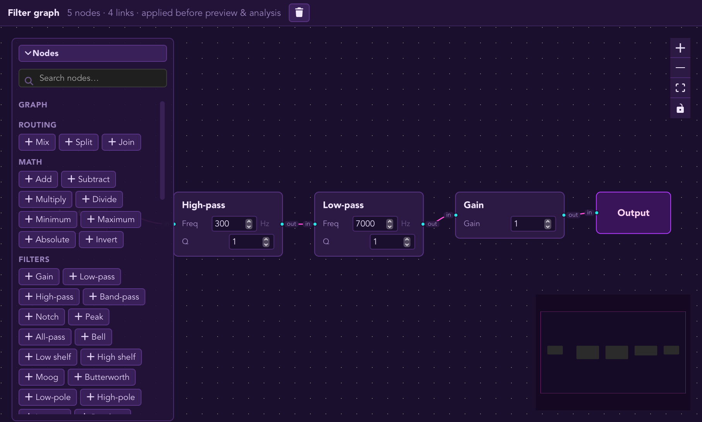
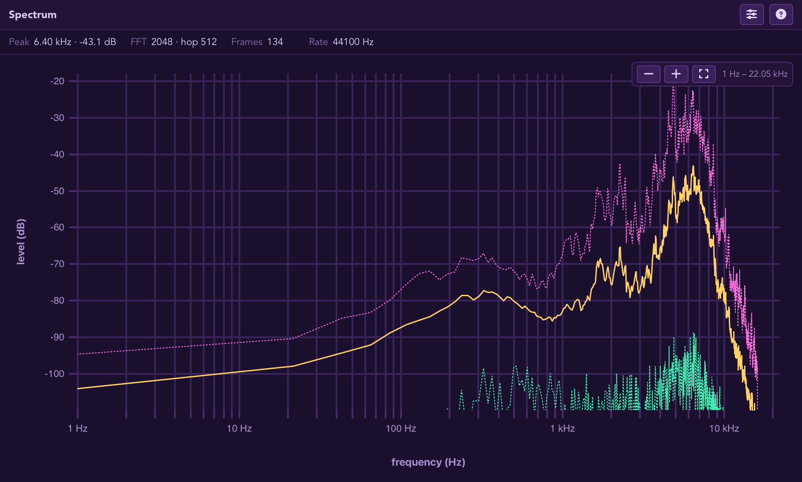
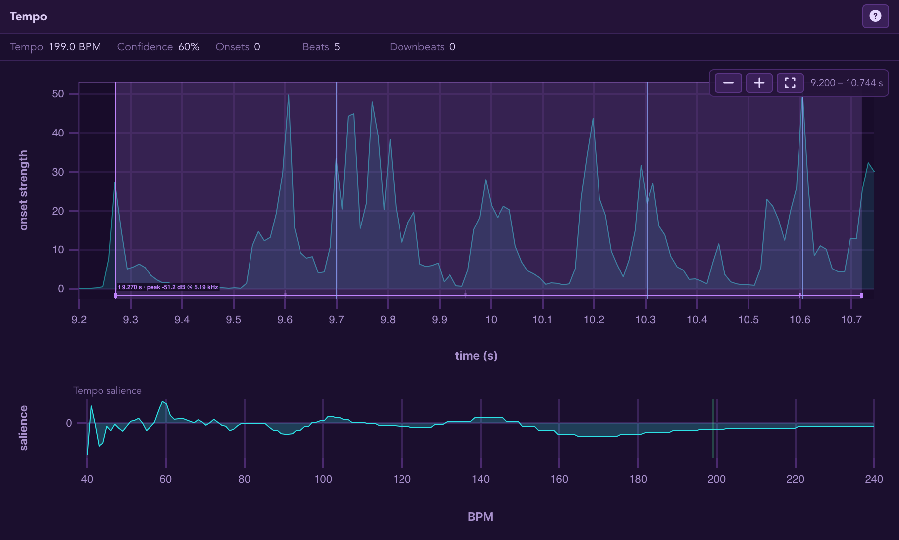

Every sound has a story.
Follow a sound wherever it goes.
Pick a song, a room, a voice. Shape it, watch it, and get to know it a little better.


-
Start anywhere
A file, the mic, the system, one app, or a mix - plus a way to make up a sound of your own.
-
Explore the views
Two dozen ways to see a sound - waveform, spectrum, spectrogram, pitch, tempo, loudness, and more. Arrange them however you like.
-
Shape the sound
Build a little graph to change the tone, then switch it on and off to hear the difference it makes.
-
Let an agent drive
Hand the running app to an AI assistant over MCP. It opens sources, runs tools, edits graphs, previews playback, and saves projects on the window you're watching.
-
Keep the whole thing
Everything - the audio, the source, the graphs, the layout - saved in one file, ready to reopen. Keep several projects side by side.
-
Analyze in bulk
hey-listen analyzeruns with no window at all. Feed it a batch of files, get one JSON result per file, and pipe it straight into your scripts or CI. -
Annotate as you listen
Leave a markdown note on any moment - a point or a span - straight from a chart. Each note keeps the values it was written against and shows up as a marker on every other view.



Free and public domain - macOS, Windows, and Linux.